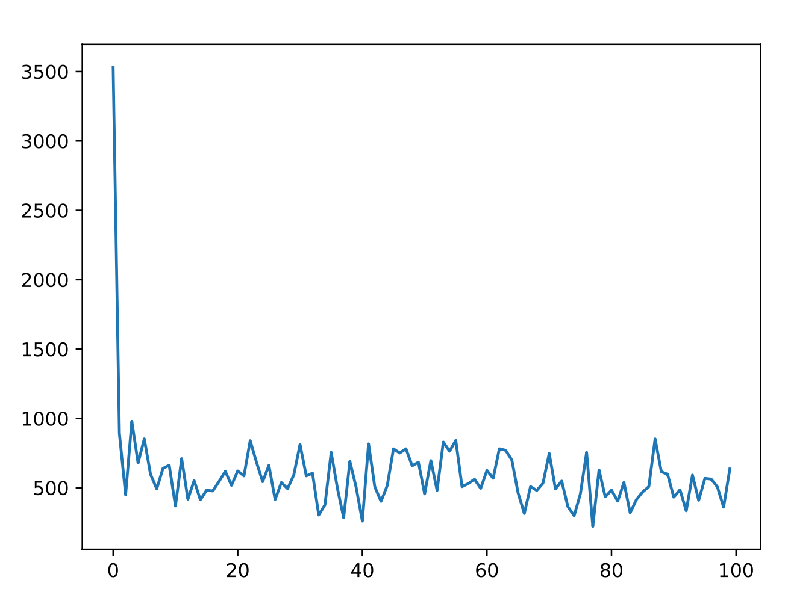

遺伝的アルゴリズム(GA)を用いたニューラルネットワーク学習のpythonプログラム
はじめに
$$ f(x,y)=\frac{(\frac{\sin x^2}{cos y}+x^2-5y+30)}{80} $$ の関数を遺伝的アルゴリズムを用いてニューラルネットワークを学習させる．
遺伝的アルゴリズム(GA:Genetic Algorithms)
GAはHollandによって開発された，生物の進化のメカニズムを模倣した最適解探索のプログラムである．有性生殖をする生物の進化の課程の中で，環境に適応できる個体ほど次世代に自分の遺伝子を残すことができ，2個体の交叉により子をつくる，また稀に突然変異がおこるという特徴に着目をしている．決定的な優れた厳密解法が発見されておらず，全探索が不可能と考えられるほど広大な解空間をもつ問題に有効とされており，様々な最適化問題に応用可能であり，今後もさらなる発展が期待される．
GAのアルゴリズム
GAのアルゴリズムを以下に示す．
- 個体の初期生成： 初期の個体をランダムに生成する．
- 適合度(評価値)の算出 各個体の適合度(評価値)決定する．
- 再生 各個体の適合度に依存した個体の再生を行う．適合度の高い個体は増殖し，低い個体は淘汰される．
- 交叉 Step3で選択された個体群からランダムに選択された個体のペアから，新しい個体を生成する．これを既定回数繰り返す．
- 突然変異 突然変異確率に基づいて，各個体の遺伝子の一部をランダムに書き換える．
- 終了条件判定 終了条件を満たせば終了，そうでなければStep2に戻る．
GAアルゴリズムの性質
GAでは再生により評価値の高い粒子を重点的に探索すると同時に，交叉と突然変異により広範囲に解を探索するため，これらの遺伝的操作が有効に動作すれば良好な解が発見されることが期待される．しかし，遺伝的操作により，最良解の情報を失い，局所解に陥ってしまうことがあり最適解をうまく発見できない場合がしばしばある．特に，制御パラメータの解空間は多数の局所解が存在しているため，交叉の操作は不向きであるといえる．また，GAは決定変数が離散な値であることを前提とした解探索手法であるが，制御パラメータの最適化のための解情報は連続値であることから解の探索に最適ではないことも考えられる．
プログラム
遺伝子はニューラルネットワークの重みと閾値から構成されるものとして，1つのニューラルネットワークが1つの個体に対応するように設計を行い，上記のGAの手法を用いて更新を行った．
パラメータなどを設定
# 世代
GEN = 100
# NNの個数
In = 2
Hidden = 2
Out = 1
# NNの個体数
Number = 1000
# 教師信号の数
Num = 1000
# 交叉確率
kousa = 0.8
# 突然変異確率
change = 0.05
# 学習する関数
def kansu(x):
return((math.sin(x[0])*math.sin(x[0])/math.cos(x[1]))+x[0]*x[0]-5*x[1]+30)/80
# シグモイド関数
def sigmoid(x):
return 1/(1+np.exp(-x))
# プロット
def plot(data,name):
fig = plt.figure()
plt.plot(data)
fig.show()
fig.savefig(str(name)+'.pdf')
教師信号作成
class Kyoshi:
def __init__(self):
self.input = np.random.rand(Num, In)*10-5
self.output = np.zeros(Num)
def make_teacher(self):
for count in range(Num):
self.output[count]=kansu(self.input[count])
ニューラルネット(NN)を作成
class NN:
def __init__(self):
self.u = np.random.rand(In, Hidden)*2-1 #入力層-隠れ層の重み
self.v = np.random.rand(Hidden, Out)*2-1 #隠れ層-出力層の重み
self.bias_h = np.random.rand(Hidden)*2-1 #隠れ層のバイアス
self.bias_o = np.random.rand(Out)*2-1 #出力層のバイアス
self.Output = 0 #出力
## GA用
self.gosa = 0 #教師データとの誤差
self.F = 0 #適合度
# 入力が与えられたときの出力を計算
def calOutput(self, x): # xは入力
hidden_node = np.zeros(Hidden)
for j in range(Hidden):
for i in range(In):
hidden_node[j]+=self.u[i][j]*x[i]
hidden_node[j]-=self.bias_h[j]
self.Output+=sigmoid(self.v[j]*hidden_node[j])
self.Output-=self.bias_o
GAを用いてNNを最適化する
class NNGA:
def __init__(self):
self.nn = [NN()]*Number
self.aveE = 0 #全体誤差平均
# 誤差と適合度計算
def error(self, x,y): #xが教師入力，yが教師出力
self.aveE = 0
for count in range(Number):
self.nn[count].gosa = 0
#入力を入れて各NNに出力させる
self.nn[count].calOutput(x[count])
# 誤差を計算
self.nn[count].gosa = abs(self.nn[count].Output - y[count])
#################################
# for i in range(Num):
# # 入力を入れて各NNに出力させる
# self.nn[count].calOutput(x[i])
# # 誤差を計算
# self.nn[count].gosa = abs(self.nn[count].Output - y[i])/Num
#################################
self.aveE += self.nn[count].gosa/Num
# 適合度計算
for count in range(Number):
self.nn[count].F= 1/ self.nn[count].gosa
# 遺伝的アルゴリズム(GA)
def GA(self):
# 個体数/2 回行う
for _ in range(int(Number/2)):
F_sum=0 #各個体の適合度の合計
for count in range(Number):
F_sum+=self.nn[count].F
# 選択
p = [0,0] #選択されるインデックスを記録する
# ルーレット選択
for i in range(2):
F_temp=0
j = -1
for count in range(Number):
j +=1
F_temp+=self.nn[count].F
if F_temp > random.random()*F_sum:
break
p[i]=j
# 子ども候補を作成
child = [NN()]*2
# 一様交叉
if random.random() < kousa:
if random.random() < 0.5:
child[0].u = self.nn[p[0]].u
child[1].u = self.nn[p[1]].u
else:
child[0].u = self.nn[p[1]].u
child[1].u = self.nn[p[0]].u
if random.random() < 0.5:
child[0].v = self.nn[p[0]].v
child[1].v = self.nn[p[1]].v
else:
child[0].v = self.nn[p[1]].v
child[1].v = self.nn[p[0]].v
if random.random() < 0.5:
child[0].bias_h = self.nn[p[0]].bias_h
child[1].bias_h = self.nn[p[1]].bias_h
else:
child[0].bias_h = self.nn[p[1]].bias_h
child[1].bias_h = self.nn[p[0]].bias_h
if random.random() < 0.5:
child[0].bias_o = self.nn[p[0]].bias_o
child[1].bias_o = self.nn[p[1]].bias_o
else:
child[0].bias_o = self.nn[p[1]].bias_o
child[1].bias_o = self.nn[p[0]].bias_o
else:
child[0] = self.nn[p[0]]
child[1] = self.nn[p[1]]
#親の平均適合度を受け継ぐ
child[0].F = (self.nn[p[0]].F+self.nn[p[1]].F)/2
child[1].F = (self.nn[p[0]].F+self.nn[p[1]].F)/2
# 突然変異
for count in range(2):
for j in range(Hidden):
for i in range(In):
if random.random() < change:
child[count].u[i][j] = random.random()*2-1
if random.random() < change:
child[count].bias_h[j] = random.random()*2-1
if random.random() < change:
child[count].v[j] = random.random()*2-1
if random.random() < change:
child[count].bias_o = random.random()*2-1
#個体群に子どもを追加
rm1=0
rm2=0
min_F=100000
# 最小適合度の個体と入れ替え
rm1 = np.argmin(self.nn[count].F)
self.nn[rm1]=child[0]
# 2番目に低い適合度の個体と入れ替え
for count in range(Number):
if count==rm1:
pass
elif min_F > self.nn[count].F:
min_F = self.nn[count].F
rm2 = count
self.nn[rm2]=child[1]
main関数
def main():
# 世代数のカウント
generation=0
# 初期の個体を生成する
nnga = NNGA()
# 教師信号の入出力を決定
teacher = Kyoshi()
teacher.make_teacher()
# テストデータ
testTeacher = Kyoshi()
testTeacher.make_teacher()
# 適合度計算
nnga.error(teacher.input, teacher.output)
# 記録用関数
kiroku = []
eliteKiroku = []
minEKiroku = []
# 学習開始
while(True):
generation += 1
# GAによる最適化
nnga.GA()
# 適合度を計算
nnga.error(teacher.input,teacher.output)
# 最小誤差のエリートを見つける
min_E = 100000
elite = 0
for count in range(Number):
if min_E > nnga.nn[count].gosa:
min_E = nnga.nn[count].gosa
elite = count
# エリートをテストデータで確認
sumE = 0
for i in range(Num):
nnga.nn[elite].calOutput(testTeacher.input[i])
sumE += abs(nnga.nn[elite].Output - testTeacher.output[i])/Num
# 教師データをシャッフル
# np.random.shuffle(teacher.input)
# teacher.make_teacher()
# 記録
kiroku.append(nnga.aveE)
eliteKiroku.append(sumE)
minEKiroku.append(min_E)
print("世代:",generation,"平均",nnga.aveE, "エリート",min_E,"テスト", sumE)
# if min_E < 0.06:
# break
if generation==GEN:
break
# plot
plot(kiroku,"平均誤差")
plot(minEKiroku,"エリート個体の誤差")
plot(eliteKiroku,"エリート個体の誤差(テストデータ)")
if __name__ == '__main__':
main()
実験結果
各世代のエリート個体とテストデータの誤差の平均が以下のグラフとなった．横軸が世代数，縦軸が誤差． 